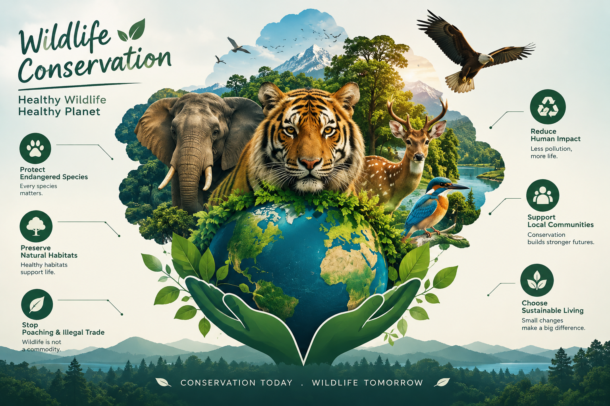

INTRODUCTION
Wildlife conservation is the protection of wild animals, birds, plants, and their natural habitats. It plays an important role in maintaining the balance of nature. Wildlife is essential for a healthy environment because every species contributes to the ecosystem in different ways.
OBSERVATION
During the study of wildlife conservation, it was observed that wild animals and birds depend on forests, rivers, grasslands, and other natural habitats for food, water, and shelter. Different species help maintain ecological balance. For example, bees and butterflies help in pollination, while some birds and animals help spread seeds. However, wildlife faces several threats. Deforestation, pollution, illegal hunting, climate change, and the destruction of natural habitats are major causes of declining wildlife populations. Human activities have reduced the living spaces of many animals, forcing them to move to other areas in search of food and shelter.

IMPORTANCE OF WILDLIFE CONSERVATION
Wildlife conservation is necessary to protect endangered species and preserve biodiversity. It helps maintain food chains and ecological balance. It also supports scientific research, tourism, and environmental education. Protecting wildlife ensures that future generations can enjoy and benefit from a healthy natural environment.
“Look deep into nature, and then you will understand everything better.”
— Albert Einstein
CONSERVATION MEASURES
Several steps can be taken to protect wildlife. Governments should establish national parks and wildlife sanctuaries. Strict laws should be enforced against illegal hunting and animal trafficking. Forests should be protected, and more trees should be planted to restore natural habitats. People should also be educated about the importance of wildlife conservation. Reducing pollution, avoiding plastic waste, and supporting environmental organizations can contribute to wildlife protection. Local communities should participate in conservation activities to achieve better results.
CONCLUSION
Wildlife conservation is a shared responsibility of governments, organizations, and individuals. Every living species has a role in maintaining the balance of nature. Protecting natural habitats and preventing the illegal killing of animals are essential steps toward conservation. By raising awareness and adopting environmentally friendly practices, we can protect wildlife and preserve biodiversity for future generations.